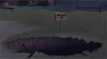
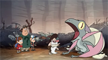

| Número |
Título |
Miniatura |
Estreno en Latinoamérica |
Estreno en estados Unidos |
| 1 |
"Turista Atrapado" |
 |
Octubre 6, 2012 |
Junio 15, 2012 |
| 2 |
"La Leyenda del Monstruo del Lago" |
|
Octubre 7, 2012 |
Junio 29, 2012 |
| 3 |
"Los Cazadores de Cabezas" |
|
Octubre 13, 2012 |
Junio 30, 2012 |
| 4 |
"La mano que mece a Mabel" |
|
Octubre 14, 2012 |
Julio 6, 2012 |
| 5 |
"La Tienda Embrujada" |
|
Octubre 20, 2012 |
Julio 13, 2012 |
| 6 |
"Dipper vs. Hombría" |
|
Octubre 21, 2012 |
Julio 20, 2012 |
| 7 |
"Doble Dipper" |
|
Octubre 27, 2012 |
Agosto 10, 2012 |
| 8 |
"Tesoro Irracional" |
|
Octubre 28, 2012 |
Agosto 17, 2012 |
| 9 |
"El Cerdito del Viajero del Tiempo" |
|
Enero 6, 2013 |
Agosto 24, 2012 |
| 10 |
"Los busca-pleitos" |
|
Enero 13, 2013 |
Septiembre 14, 2012 |
| 11 |
"El pequeño Dipper" |
|
Enero 20, 2013 |
Septiembre 28, 2012 |
| 12 |
"Súper Halloween" |
|
Octubre 31, 2012 |
Octubre 5, 2012 |
| 13 |
"Hoy manda Mabel" |
|
Abril 20, 2013 |
Febrero 15, 2013 |
| 14 |
"¡Pozo sin Fondo!" |
 |
Mayo 4, 2013 |
Marzo 1, 2013 |
| 15 |
"En lo profundo" |
|
Mayo 11, 2013 |
Marzo 15, 2013 |
| 16 |
"La Alfombra Mágica" |
|
Mayo 18, 2013 |
Abril 5, 2013 |
| 17 |
"Locura por los Chicos" |
|
Mayo 25, 2013 |
Abril 19, 2013 |
| 18 |
"El Cerdito o la Vida" |
 |
Agosto 31, 2013 |
Junio 28, 2013 |
| 19 |
"Fuga de ensueño" |
|
Septiembre 7, 2013 |
Julio 12, 2013 |
| 20 |
"El Gigantesco Gideon" |
|
Septiembre 8, 2013 |
Agosto 2, 2013 |